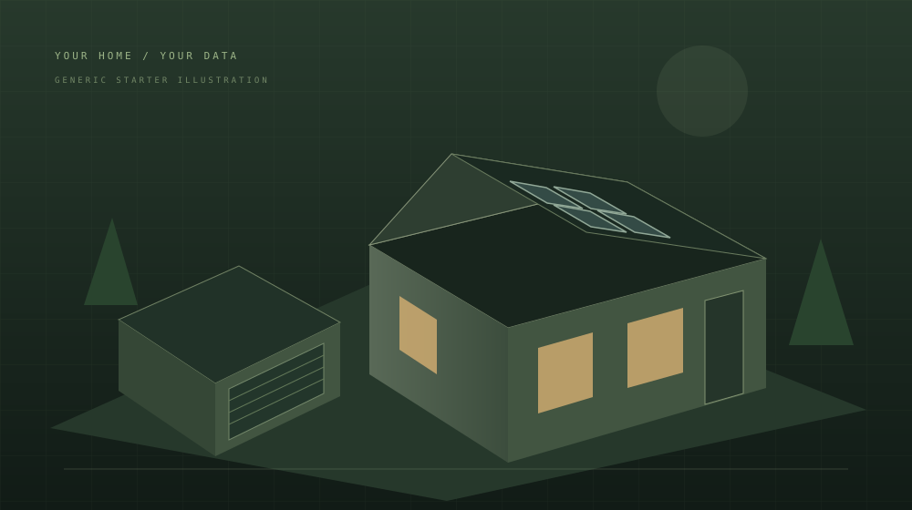

Skip to dashboard
PRMGR / OBSERVATORY STARTER
Garage, in view.
One place to understand your garage.
SYNTHETIC DEMO
Synthetic demo · not a real garage
Demo
Import readings
Export JSON
Load local recorder
THE GARAGE
SAMPLE GARAGE

Built around one useful question.
What’s happening in the garage?
GARAGE / OVER TIME
Where the power goes.
Last 24 hours
Last 6 hours
Last hour
Most recent samples
Latest 12
Time
Garage consumption / kW